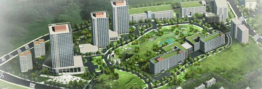

市南区行政审批服务大厅位于宁夏路286号市南区政府机关大楼东一、二层，2008年7月1日正式启用，2015年7月15日遵循“功能齐全、设施领先、运行有序、监管到位”的建设理念，对原行政审批服务大厅进行升级改造，将大厅建设成为提供政务服务的场所、实现政务公开的平台、联系人民群众的纽带、展示政府形象的窗口，2015年11月18日正式启用。
一、大厅布局
新大厅共两层，使用面积1700平方米，具有集中审批、统一收费、综合服务三项基本功能。主要设有企业联审区、民生事务服务区、经济建设服务区、综合服务区。
一层以企业联审区、民生事务服务区、综合服务区为主，主要办理企业注册登记的审批、社会民生事务审批及服务事项。设服务中心、制证中心、收费银行等，提供复印、打字、自助上网查询等服务。入驻民政局、商务局、卫计局、食药局、市场监督管理局、档案局共6个部门22个窗口。
二层以经济建设服务区为主，主要办理经济建设综合审批及相关服务事项。提供建设项目统一收发件、重点项目绿色通道代办服务，黄标车、黄改绿补贴联审服务。入驻组织部、发改局、教育体育局、财政局、人社局、城管局、城建局、文化新闻出版局、安监局、执法局、规划分局、消防大队、环保分局共13个部门20个窗口，以及审批事项办件量少的由科技局、司法局、人防办、金融办组成的综合审批服务窗口，联合对外办公。
二、大厅特色
一是功能齐全。按照“应进必进”的要求，全区23个部门（单位）、42个窗口、99名审批人员入驻大厅，共有78项行政审批事项和118项服务事项实现集中办理。大厅内行政审批服务事项涉及的所有收费，均在大厅内的收费银行实现“一个窗口、一个网络”统一收费和即办即收。除行政审批事项外，与办理审批事务相关的服务事项，如党员组织关系转接、档案查询和电子身份证（数字证书）认证等均在大厅实现“一站式”办理。
二是设施先进。采用集叫号、查询、评价和显示于一体的智能系统，实现相关资料自动录入，每月末系统自动生成满意率、办理事项数量、办结率等报表，实现智能管理。安装LED大屏、窗口屏实时滚动播出审批事项办理进程和便民通知等内容。每个窗口配备高拍仪、二维码扫描仪、二代身份证读卡器等用于审批资源信息共享库证照入库的设备，在审批办结环节即时采集、上传证照信息录至区审批信息共享库，并上传市库，推进部门间、市区间信息资源互联共享，互通共用，实现信息验证电子化。综合服务区配备自助办税争端（ARM机）、高清电视、复印机、传真机、公用电话、自助查询电脑、文明伞、手机加油站等便民设施，提供无线网络无缝隙全覆盖，为企业和群众提供无偿便捷服务。
三是便捷高效。大厅全面推行网上审批，形成了网上服务与实体大厅服务相结合、线上服务与线下服务相结合的一体化新型政务服务模式，通过审批事项网上预约、申请网上提交、材料网上审核、环节网上流转、意见网上出具、文书网上打印、数据网上共享、过程网上控制的途径，实现了审批业务的全过程网络监管、网上办理、信息公开的目标，有效的提升了审批的质量和效率。向办事人提供网上咨询、网上预约、网上申请、网上办理、网上评议、网上投诉、网上查询、网上反馈、网上下载等“一站式”网上审批服务。大厅微信公众平台作为“指尖上的大厅”，提供办事指南查阅、预约、申请、办件查询等服务。大厅推行网上预约服务，可以避免办事人排队等候的苦恼。大厅实行统一制证，集中打印审批部门的证照、批复文件等审批决定，压缩制证时限，提高审批效率。同时，在证照增加二维码，作为唯一识别编码，加强防伪功能，方便办事群众查询。审批证照实行免费快递送达服务，打通了服务群众的“最后一公里”。
市南区政务服务和公共资源交易管理办公室是行政审批服务大厅的日常管理机构，负责行政审批事务的协调管理；研究提出优化行政审批和服务事项流程的意见；参与研究并调整入驻大厅的部门（单位）、审批服务事项和布局；协调、督促重大项目和联合审批事项的办理；对入驻大厅的审批事项流程进行动态监控。下设综合科（挂交易管理科牌子）、政务服务与行政审批科。
市南区行政审批服务大厅将秉承“依法为民高效、阳光公开透明”的理念，不断提高行政审批效率，切实向社会公众提供优质的政务服务，为我区全力打造国际国内一流的宜业宜居幸福城区做出不懈地努力。